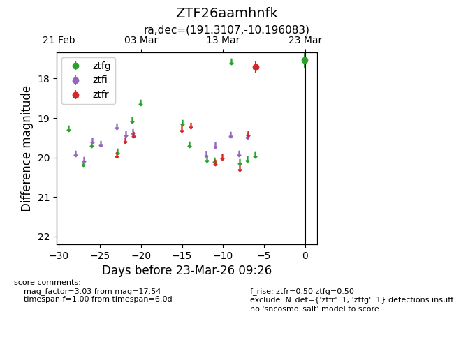
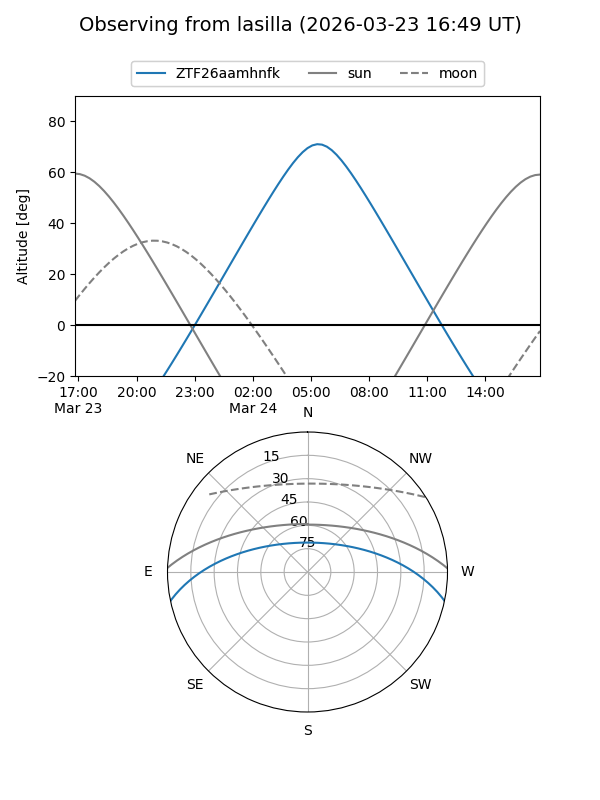
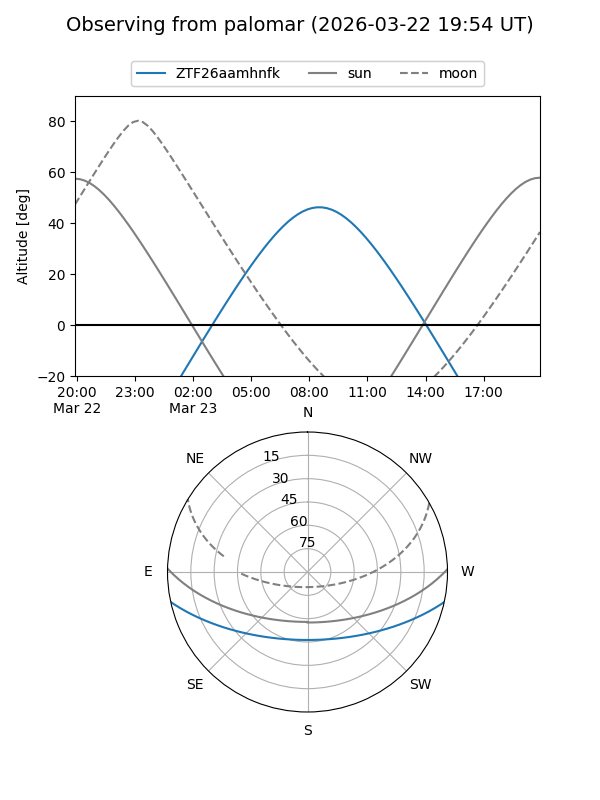

ZTF26aamhnfk
Target ZTF26aamhnfk at 2026-03-23 09:28
Aliases and brokers:
FINK: link
Lasair: link
ALeRCE: link
alt names
ZTF26aamhnfk (ztf,fink_ztf)
Coordinates:
equatorial (ra, dec) = 191.3107,-10.19608
equatorial (HMS+DMS) = 12:45:14.56,-10:11:45.90
galactic (l, b) = (300.4191,+52.64543)
Flags:
Photometry:
last ztfg=17.54, ztfr=17.70
1 ztfg, 1 ztfr detections
Lightcurve

Visibility


Additional plots